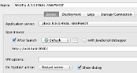
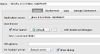
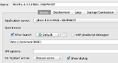

- Director, Developer Advocacy, Red Hat Inc.
- O’Reilly and McGraw Hill author
- Fitness freak
Java EE 7 IDEs

 


=== Jun 2013
ChatServer.java@ServerEndpoint("/chat") (1)
public class ChatEndpoint {
@OnMessage (2)
public void message(String message,
Session client) (3)
throws IOException, EncodeException {
for (Session peer : client.getOpenSessions()) {
peer.getBasicRemote().sendText(message);
}
}
}| 1 | Creates a WebSocket endpoint, defines the listening URL |
| 2 | Marks the method that receives incoming WebSocket message |
| 3 | Payload of the WebSocket message |
@ServerEndpoint annotation on a POJO converts it into a WebSocket server endpoint. No additional deployment descriptors are required. The URL at which the endpoint is published is included in the annotation.@OnMessage and the payload of the message is automatically mapped to the method parameter.job.xml<job id="myJob" xmlns="http://xmlns.jcp.org/xml/ns/javaee" version="1.0">
<step id="myStep" >
<chunk item-count="3"> (1)
<reader ref="myItemReader"/> (2)
<processor ref="myItemProcessor"/> (3)
<writer ref="myItemWriter"/> (4)
</chunk>
</step>
</job>| 1 | Item-oriented processing, number of items in chunk |
| 2 | Item reader for chunk processing |
| 3 | Item processor for chunk processing |
| 4 | Item writer for chunk processing |
CreateJson.javaJsonObject jsonObject = Json.createObjectBuilder() (1)
.add("apple", "red") (2)
.add("banana", "yellow")
.build(); (3)
StringWriter w = new StringWriter();
JsonWriter writer = Json.createWriter(w); (4)
writer.write(jsonObject);| 1 | Creates a JSON object builder |
| 2 | Adds a name/value pair to the JSON object |
| 3 | Returns the JSON object associated with this builder |
| 4 | Writes the JSON object to the writer |
JSONObject is created and key/value name pairs are added using convenient add methods.java.io.Writer or java.io.OutputStream.RunMyTask.javapublic class MyTask implements Runnable { (1)
@Override
public void run() {
. . .
}
}
@Resource(name = "DefaultManagedExecutorService") (2)
ManagedExecutorService defaultExecutor;
executor.submit(new MyTask()); (3)| 1 | Runnable or Callable tasks can be submitted |
| 2 | ManagedExecutor is injected, default resource provided |
| 3 | Submit the task |
ManagedExecutorService.Runnable or Callable.ManagedExecutorService which can be easily injected using @Resource.RunClient.javaClient client = ClientBuilder.newClient(); (1)
WebTarget target = client.target(...); (2)
target.register(Person.class);
Person p = target
.path("{id}") (3)
.resolveTemplate("id", "1")
.request(MediaType.APPLICATION_XML) (4)
.get(Person.class); (5)| 1 | ClientBuilder is the entry point |
| 2 | Build a new web resource target, specifies the path |
| 3 | Sub resource URI |
| 4 | Define the accepted response media types |
| 5 | Call HTTP GET, specify the type of resource |
Client is required to access a Web resource using the Client API. The default instance of Client can be obtained by calling newClient on ClientBuilder.ClientWebTargetWebTargetWebTarget become apparent when building complex URIs, for example by ex- tending base URIs with additional path segments or templates. Note the use of the URI template parameter {orderId}. The exact value of this template parameter is resolved using resolveTemplate() method.get() method. In this case, a String representation is returned back. This can also be a POJO where on-the-wire format is converted to POJO using JAX-RS entity providers.SendMessage.java@JMSDestinationDefinition(name="myQueue", interfaceName="javax.jms.Queue") (1)
@Resource(mappedName="myQueue")
Queue syncQueue;
@Inject
// @JMSConnectionFactory("java:comp/DefaultJMSConnectionFactory") (2)
private JMSContext context; (3)
context.createProducer().send(syncQueue, "..."); (4)| 1 | Create destination resource during deployment |
| 2 | Default JMS connection factory |
| 3 | Main interface of the simplified API |
| 4 | Fluent builder API, runtime exceptions |
JMSContext interface.JMSContext combines in a single object the functionality of both the Connection and the Session in the earlier JMS APIs. A container-managed JMSContext instance can be obtained by simply injecting it with the @Inject annotation. Notice, no ConnectionFactory is specified here. In this case, a default JMS ConnectionFactory is used by and this is defined by the platform.Destination, a Queue in this case, is injected using @Resource. Even this annotation can be created using newly introduced @JMSDestinationDefintion annotation which would automatically create the destination.* Finally, the message is sent using method chaining. For example, create a producer using createProducer() and then calling send() method to send a message to a destination. 

| Java EE 7 samples - https://github.com/javaee-samples/javaee7-samples |
| Reference Implemenation: GlassFish - http://glassfish.org, @glassfish |
| WildFly - http://wildfly.org, http://github.com/wildfly, @WildFlyAS |
| Slides generated with Asciidoctor and DZSlides backend |
| Original slide template - Dan Allen & Sarah White |